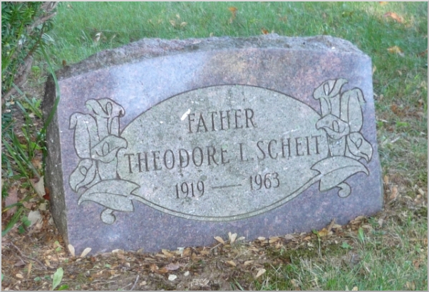
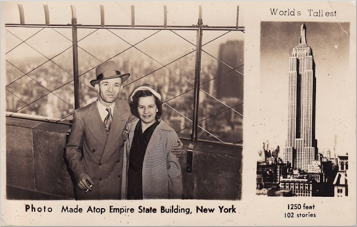

Remembering Theodore Scheit
This photograph was taken over Labor Day Weekend in 2010, at Evergreen Cemetery, Watertown, Connecticut, USA.

This was the 47th anniversary of my father's passing, as he died on Labor Day Weekend in 1963.
As I was visiting to pay my respects, and as I had my Garmin Sat Nav in the car, I decided to take the co-ordinates of my father's final resting place.
I placed the device immediately on top of the headstone; the exact information recorded:
N 41° 36.545'
W 073° 07.625'
Elev: 208 M

|
|
©
· Fred Scheit
|